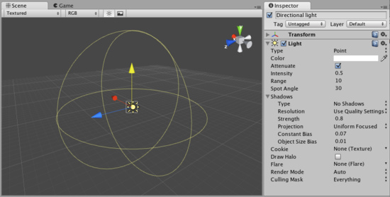

Light
Lights will bring personality and flavor to your game. You use lights to illuminate the scenes and objects to create the perfect visual mood. Lights can be used to simulate the sun, burning match light, flashlights, gun-fire, or explosions, just to name a few.

The Light Inspector
The Light Inspector
There are three types of lights in Unity:
- Point lights shine from a location equally in all directions, like a light bulb.
- Directional lights are placed infinitely far away and affect everything in the scene, like the sun.
- Spot lights shine from a point in a direction and only illuminate objects within a cone - like the headlights of a car.
Lights can also cast Shadows. Shadows are a Pro-only feature. Shadow properties can be adjusted on a per-light basis.
Properties
| Type | The current type of light object: |
| Directional | A light placed infinitely far away. It affects everything in the scene and can not attenuate. |
| Point | A light that shines equally in all directions from its location, affecting all objects within its Range. |
| Spot | A light that shines everywhere within a cone (the Spot Angle), and a Range. Only objects within this region are affected by the light. |
| Color | The color of the light emitted. |
| Attenuate | Does the light diminish with increasing distance? If disabled, objects' brightness will "pop" as they enter and exit the light's region of influence. It can be useful to turn off when you want to do some special effects. If the light is directional, this property is ignored. |
| Intensity | Brightness of the light. Default value for Spot/Point lights is 1. Default value for Directional lights is 0.5 |
| Range | How far light is emitted from the center of the object. |
| Spot Angle | If the light is a Spot light, this determines the angle of the cone in degrees. |
| Shadows (Pro only) | Options for shadows that will be cast by this light. |
| Type | Hard or Soft shadows. Soft shadows are more expensive. |
| Resolution | Detail level of the shadows. |
| Strength | The darkness of the shadows. Values are between 0 and 1. |
| Projection | Projection type for Directional light shadows. |
| Constant Bias | Bias in world units used for shadows. This value is currently ignored for Point Light shadows. |
| Object Size Bias | Bias applied per shadow caster depending on it's size. Default value is 1% of caster's size. This value is currently ignored for Point Light shadows. |
| Cookie | You can assign a texture to a light. The alpha channel of this texture is used as a mask that determines how bright the light is at different places. If the light is a Spot or a Directional light, this must be a 2D texture. If the light is a Point light, it must be a Cubemap. |
| Draw Halo | If checked, a spherical halo of light will be drawn with a radius equal to Range. |
| Flare | Optional reference to the Flare that will be rendered at the light's position. |
| Render Mode | Choose whether this light is rendered as a vertex light, pixel light, or determined automatically. For a detailed description of this tradoff, see Performance Considerations below. Options include: |
| Auto | The rendering method is determined at runtime depending on the brightness of nearby lightsOptimizing Graphics Performance page for more information.
Creating CookiesFor more information on creating cookies, please see the tutorial on how to create a Spot Light cookie here. Hints
|